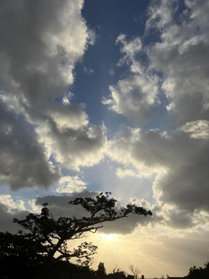

うるがいの話 ある日
最新: この楽譜ほしい【うるがいの話 ある日】とは 一日だけのプログです
『うるがいの話』の最新一日だけのプログで、通信料が少なく経済的だ。カニの画像をクリックすると全ての日付が載る『うるがいの話』サイトを表示します
|
|
【うるがいの話】 うるがい(ｳﾙｶﾞｲ urugai)とは、『もずくがに』の名前でとても大きくなります。 |
|---|---|
|
|
【カミマヤーの話】 猫のことを方言でマヤーといいます。カミマヤー（kamimayaa）とは、神の猫のことです。 |
|
【たながぁの音楽】 たながぁ（ﾀﾅｶﾞｰ tanagaa）とは手長えびのことで、何種類かあり大きいのは車 エビぐらいになります。 |

|
【ぶながぁの話】 ぶながぁ(ﾌﾞﾅｶﾞｰ bunagaa)とは、赤い髪の毛、赤い身体、そして身長は１ｍ２０ｃｍ ぐらい、川の蟹を食べているの目撃された。場所は沖縄県国頭郡大宜味村のと ある村僕の隣近所に住んでいる爺さんから、聞いた話です。 |
|
|
【ギーマの話】 ギーマ(giima)とは、山原の里山に咲くスズランに似た、 花を付けます。実は食べられます、 気が付くと口の周りが紫になっています。 |
2026年01月12日 (月）この楽譜ほしい
14:55

@赤城榛名-r7k
この楽譜、ほしい
フムフム、楽譜？ってどの楽譜なのか、悩んでしまう。かなり悩
んだ結果、次のコメントを返す。
参考にした楽譜は、次の楽譜です
楽譜PDF "https://bunagaa.bitbucket.io/bunagaa_MuseScore3/The_Mamas_and_the_Papas_California_Dreamin.pdf"
（検索サイトで、California Dreamin score と英語で検索する
と見つかります）
なお、楽譜はホ長調ですが、動画ではハ長調に移調しています。
また、動画の楽譜などはYouTubeの概要欄に記載しています。
[概要欄とは動画タイトルのすぐ下に表示される文章の部分を指し、
別名「説明」とも呼ばれます。]
[概要欄は「もっと見る」をクリックしない限り、3行までしか表
示されません。]
返信の返信がありません！、マ、楽譜を欲しいという人なのでと
りあえずいいのかな。おそらく、動画の楽譜だと思う、概要欄を
見ずにコメントを書き込んだんだと思う。ホナ、概要欄を書き方
がまずいのかと、概要蘭の先頭行に
工工四、楽譜はダウンロード無料です
とした。検討に検討を重ねた結果、工工四を楽譜の前に置きまし
た。